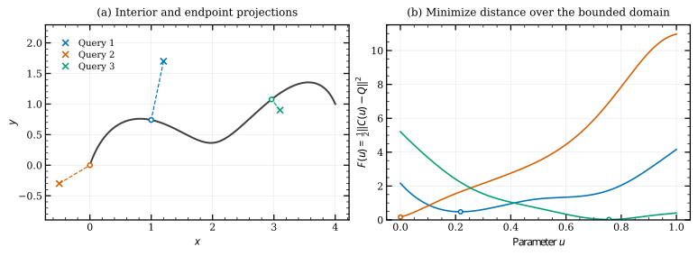
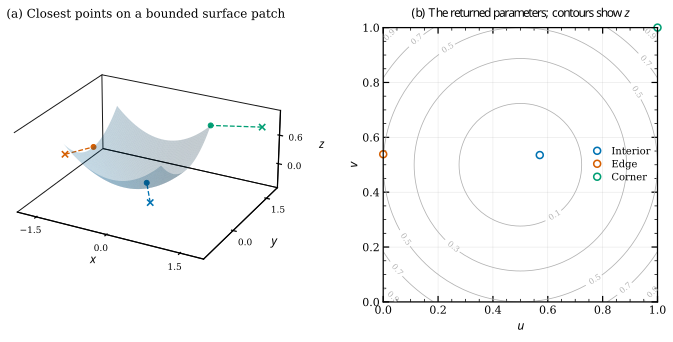

Point projection onto curves and surfaces#
Point projection finds the point on a bounded curve or surface that is closest to a given spatial query. It is also called point inversion because the output is the corresponding parameter. It is useful in fitting, distance evaluation, mesh-to-geometry association and geometric optimization.
Unlike coordinate inversion, it uses all spatial coordinates and does not require a monotone \(x\), \(y\) or \(z\) coordinate.
Minimize squared distance#
Use a common notation \(\mathbf X(\boldsymbol\xi)\), where \(\boldsymbol\xi=u\) for a curve and \(\boldsymbol\xi=(u,v)\) for a surface. For a query \(\mathbf Q\), define
Distance and squared distance have the same minimizers. Squared distance is particularly convenient because it remains differentiable when the distance is zero. The domain \(D\) is the curve’s active knot interval or the Cartesian product of the two active surface intervals.
With \(J=[\mathbf X_{\xi_1}\ \cdots\ \mathbf X_{\xi_d}]\), the gradient and exact Hessian are
The second term describes how the geometry bends relative to the query. Dropping it gives a Gauss–Newton approximation; the JAX projector uses the full Hessian in its local refinement.
Interior orthogonality and bounded minima#
At an interior curve solution,
At an interior surface solution, the residual is orthogonal to both tangent directions:
These equations express stationarity, not global optimality. A stationary point may be a maximum or saddle. At a stationary point, a positive-definite distance Hessian is sufficient for a strict smooth interior local minimum; a distant competing minimum can still be closer.
At a lower bound, a feasible parameter increment is positive, so a minimum requires \(g_i\ge0\). At an upper bound it requires \(g_i\le0\). A free parameter requires \(g_i=0\). These are the box-constrained first-order conditions. They explain why a correct endpoint or corner projection can have a nonzero orthogonality residual. At a knot corner, use one-sided derivatives rather than imposing a nonexistent smooth tangent.


The dots are projections calculated with NurbsCurve.project_points().
The second query projects to the starting endpoint. The right panel evaluates
the actual distance objective over the parameter interval and marks each
returned solution; it is not a sketch of an assumed optimization landscape.#
Sampled initialization and one local solve#
The JAX curve and surface projectors evaluate positions over a knot-aware sampling grid, choose the closest sample for each query, and run one bounded local solve from that parameter. They do not run a local solver from every sample or maintain a multistart option.
Curve sampling defaults to 64 interior samples per span plus span boundaries; surface sampling uses eight per axis span plus boundaries and forms a tensor grid. Large positive weight ratios reallocate part of the sampling budget toward logarithmic endpoint clusters. These are initialization heuristics, not global coverage guarantees. Sampled positions are shared across a query batch.
The local solver uses safeguarded Newton steps, Hessian regularization to obtain a usable search direction, feasible step scaling and an Armijo decrease check. A feasible gradient step is available within the same solve if a Newton direction is unsuitable. Stagnation is not treated as convergence, and a failed solve raises instead of silently accepting a finite parameter.
Stationarity is normalized by physical tangent lengths. For a free coordinate, the stopping scale is based on
with the corresponding constrained gradient on active bounds and separate checks for minima and singular directions. This reduces dependence on arbitrary parameter units. It is a convergence criterion, not a direct bound on parameter error or distance from the global optimum.
import jax.numpy as jnp
import nurbspy.jax as nrb
curve = nrb.NurbsCurve(jnp.array([[0., 0.5, 1.], [0., 1., 0.]]))
queries = jnp.array([[0.25, 0.75], [0.8, -0.2]]) # (ndim, N)
u = curve.project_points(queries, tol=1e-9, samples_per_span=64)
feet = curve.get_value(u)
# With an existing JAX surface:
# uv = surface.project_points(queries3d, gtol=1e-9, samples_per_span=8)
# feet = surface.get_value(uv[0], uv[1])
Curve output has shape (N,); surface output has shape (2,N). A JAX surface
also provides project_point_to_surface() for a single query. The active
bounds are \([U_p,U_{-p-1}]\) and \([V_q,V_{-q-1}]\) as appropriate. Curve tol
is honored; an explicit gtol overrides it. maxiter, ftol and xtol
control the iteration budget and stagnation checks.
The default NumPy backend exposes scalar
project_point_to_curve() and project_point_to_surface() methods. It chooses
the best knot-midpoint candidate and performs one SciPy L-BFGS-B solve on the
distance objective over normalized bounds. Its method names and solver
controls should not be confused with the JAX batch API. Existing executable
curve and
surface examples use NumPy.


Projection onto the exact quadratic patch \(z=(x^2+y^2)/2\). The three returned points lie in the interior, on an edge and at a corner. The right panel shows their computed parameters; background contours are evaluated surface height.#
Differentiating a projection#
The optimizer’s path and sampled seed are not the mathematical definition of the derivative. At a unique, smooth interior minimum with nonsingular Hessian, differentiate the stationarity equation \(\mathbf g(\boldsymbol\xi^*(\theta),\theta)=0\):
For query motion alone, \(\partial_{\mathbf Q}\mathbf g=-J^T\), so \(d\boldsymbol\xi^*/d\mathbf Q=H^{-1}J^T\) at a regular interior solution. For stable active bounds, solve the reduced system on free coordinates. If a bound moves with the design, its motion also enters the free equations through Hessian coupling. The implementation uses the exact unregularized stationarity equations for these sensitivities, not the regularized search matrix used to make an optimization step.
For the minimized squared-distance value \(F^*(\theta)\), stationarity cancels the free parameter-motion term. With fixed bounds this gives the envelope derivative
Moving active bounds add their boundary-motion terms. An arbitrary downstream function of the projected parameter does not benefit from this cancellation and needs the implicit parameter derivative. This distinction matters in curve fitting and shape optimization.
Repeated queries and limitations#
For repeated queries against a fixed JAX surface,
prepare_surface_projection(surface, samples_per_span=8) snapshots the
geometry and sampled positions. Its project_point() and project_points()
methods use the same one-solve refinement. Rebuild after changing control
points, weights, knots, degree or sampling density. To differentiate geometry,
construct the snapshot inside the differentiated function; replacing geometry
leaves alone would leave stale sampled positions.
Finite sampling can miss narrow basins, especially on folded geometry or with strongly unequal weights. Increase sampling density and compare difficult cases with an independent dense/reference calculation. Tensor sampling and sample-to-query distance work can become expensive for large surfaces or point clouds; batch queries when memory matters.
The JAX routines require real finite geometry, positive weights and continuous knot domains, conservatively rejecting interior multiplicity above the degree. Implicit sensitivities require an isolated smooth minimum, a well-conditioned reduced Hessian and a stable active set. Competing branches, weak active bounds, nonsmooth knots or collapsed geometry can invalidate derivatives. Detected undefined sensitivities are represented by NaNs; this is not a guarantee that every ambiguous global configuration can be detected from finite samples.
Reproduce the figures#
python docs/generate_theory_images.py --only projection
The figure script uses production JAX
projection and checks interior stationarity, sampled distance comparisons and
the surface boundary classifications. Vector PDFs:
curve projection,
surface projection.